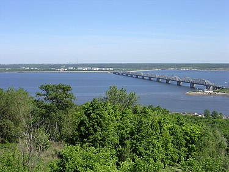

Во́лга (тат. Идел, чув. Атӑл, каз. Еділ, ног. Эдил, калм. Иҗил-һол, мар. Юл, эрз. Рав) — река в европейской части России (небольшая часть дельты Волги, вне основного русла реки, находится на территории Казахстана). Одна из крупнейших рек на Земле и самая большая по водности, площади бассейна и длине в Европе, а также крупнейшая в мире река, впадающая в бессточный (внутренний) водоём.